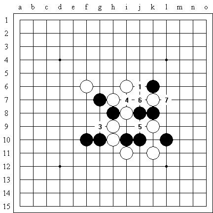

一道习题引出的小小想法——“先手次数”的概念
#1 一道习题引出的小小想法——“先手次数”的概念 作者：有志青年 发表时间：2008-5-30 16:29:49
文章来源：http://hi.baidu.com/%C6%C1%B1%CE/blog/item/dce5e71981c7b27fdbb4bdfd.html
如图所示：这是《天狗道场》系列中的一道题目，黑先胜，黑1是显而易见的答案。

这时白6是强防，黑7后黑3即可取胜。但是如果黑1后白棋不走，则黑3白4黑5白6黑7可形成一个活四和一个活三，这相当于两次取胜手段。也就是说，如果白棋让一次先手，则黑棋最终的结果是获得两次先手，如果白棋不让先手（即按照正常情况行棋），则黑棋很可能依然得到一次先手而取胜。 这里的概念其实很不清晰，我提出这个想法的观点无非是抛砖引玉，因为如果白棋不走棋的话，黑棋就可以省下许多计算强防（特别是带有强烈反击的）的时间和精力，这在实战中无疑是非常有利的——只要出让先手的次数少于最终获得先手的次数，取胜就是有可能的。 显然这个计算方法不是处处适用，即使它真的能起一些作用，还要大家好好考虑。#2 Re:一道习题引出的小小想法——“先手次数”的概念 作者：汪洋孤舟 发表时间：2008-5-30 16:55:03
呵呵，刚好在屏蔽的博客上看过！#3 Re:一道习题引出的小小想法——“先手次数”的概念 作者：先期 发表时间：2008-6-1 20:42:01
有收获，学习了，希望多多发些我这样的好帖，辛苦了！#4 Re:一道习题引出的小小想法——“先手次数”的概念 作者：石投 发表时间：2008-6-11 19:50:13
学习了~